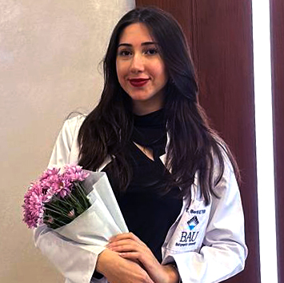

Education
Bahcesehir University
Faculty of Health Sciences / Anticipated Graduation: June 2026
- August 2022 - Ongoing
- Istanbul, Turkey
- Bachelor's in Nutrition and Dietetics; Current GPA 2.71
- Relevant Coursework: Medical Biology and Genetics, Organic Chemistry, Nutritional Biochemistry I & II, Mother and Child Nutrition, Medical Nutrition in Adult Diseases I & II, Medical Nutrition Therapy in Pediatric Diseases I & II, Community Nutrition and Epidemiology, Biostatistics, Food Legislation and Control, Nutrition in Chronic Diseases, Dietary Supplements and Health Effects, Nutrition in Endocrinology Diseases, Assessment of Nutritional Status in Society, Food Microbiology, Food Service Systems I & II, Sports Nutrition, Psychology of Health Sciences, Nutrition Education and Counseling, Food Chemistry I & II, Basic Anatomy, Basic Physiology, Weight Management and Alternative Diets, Sustainable Talent Management and Innovation, Sustainability and Social Inclusion, Globalization and Media
- Select Papers:
- NTD4107 Seminar (Individual): Wrote a seminar paper and prepared a poster on the topic of night eating behavior, sleep quality, and metabolic health, investigating night eating's key mechanisms, its metabolic outcomes, its effect on sleep architecture, and possible interventions to avoid the reinforcement of night eating leading to bad sleep and vice versa
- NTD4005 Food Legislation and Control (Group): Conducted a comparative analysis of the Turkish and French food codes, highlighting how France integrates cultural identity with scientific principles and sustainability, whereas Turkey emphasizes technical standards and hygiene control
- NMD3102 Globalization and Media (Individual): Wrote a report paper on the negative impact of misinformed diet and other food-related trends on social media on people’s health and knowledge on nutrition, advocating for media awareness and literacy skills to be able to separate misinformation from potentially helpful healthy diets and lifestyles
Private Doga High School
Science-Math Concentration, Private Anatolian High School Diploma
- September 2018 - June 2022
- Istanbul, Turkey
- Graduated second in my year with a 95/100 GPA following the national Turkish High School curriculum
Experience
Gokce Kitiz Nutrition and Diet Consultancy
Intern
- October - November 2025
- Istanbul, Turkey
- Conducted comprehensive nutritional assessments, monitored patients' dietary progress throughout treatment plans, prepared detailed dietary reports, and analyzed nutritional records to track patient outcomes and treatment effectiveness
- Delivered nutritional education and personalized counseling to patients and family members to support adherence and lifestyle changes
- Conducted evidence-based research analyzing current scientific literature on several topics such as the relationship between obesity and sleep, and wrote up a report for my supervisor
Huz Praxis
Intern
- June - September 2025
- Köln, Germany
- Worked under the supervision of Dietician Micheala Huz and was evaluated on my performance in developing personalized nutrition programs tailored to individual patient needs, medical conditions, and treatment goals
- Applied German clinical nutrition guidelines and evidence-based protocols in patient assessment and care management
- Made a German presentation on the topic of food and fashion at a fashion atelier
- Participated in multidisciplinary team meetings, collaborating with physicians, nurses, and healthcare staff to optimize patient care plans
Gokce Kitiz Nutrition and Diet Consultancy
Intern
- February - March 2025
- Istanbul Turkey
- Analyzed and understood key differences between academic dietary approaches and real-world clinical diet applications, and created individualized diet plans by performing comprehensive nutritional assessments using dietary recalls, patient interviews, and laboratory data analysis
- Assisted in the creation of nutritional brochures and informational materials
- Managed patient reception and developed effective communication skills with diverse patient populations
Bahcesehir University Erasmus Office
Erasmus Student Liaison
- January - February 2024
- Istanbul, Turkey
- Worked with salary in Bahceşehir University's Buddy Program, serving as liaison for Erasmus students
- Coordinated student onboarding processes including airport reception, SIM card procurement, and essential documentation completion, and maintained long-term mentorship relationships with the exchange students, to provide continuous academic and cultural support beyond official program duration
- Facilitated cultural integration by organizing city orientation tours to provide ongoing support throughout the academic semester, and collaborated with team members to plan and execute social events and activities for the wide international student community
Bahcesehir University Call Center
Call Operator
- July - September 2023
- Istanbul, Turkey
- Managed incoming inquiries and resolved concerns efficiently while maintaining professional service standards
- Strengthened communication and problem-solving skills through high-volume customer interactions
Academic Enrichment
EIT Food Learning Services: Inspire Explore Programme
- Learned about food system innovation, covering problem identification, sustainable solution development, market evaluation, and resource mobilization for startup ventures
- Developed foundational skills in applying systems analysis to food sustainability challenges and creating social and environmental value through innovation
- Earned the EIT Food certificate in collaboration with Aarhus University, Technion, University of Cambridge, and University of Warsaw
The Good Food Institute: The Science Behind Alternative Proteins
- Studied alternative protein science covering plant-based meat, fermentation technologies, and cultivated meat production, looking at biological and chemical processes, nutritional composition, and sensory properties of sustainable protein alternatives
- Analyzed environmental and economic drivers behind protein transition and global food security challenges, and examine production technologies, regulatory frameworks, and commercial scalability of emerging protein industries
MOOC: Demenz und Ernährung (Dementia and Nutrition)
- Completed a German-taught MOOC on nutritional management and care strategies for individuals with dementia and neurocognitive impairments, acquiring knowledge of dementia recognition, risk factors, and nutrition-related prevention strategies including Mediterranean and Austrian dietary approaches
- Learned evidence-based interventions for managing malnutrition, food refusal, appetite stimulation, and eating behavior documentation, and studied practical applications of occupational therapy techniques, adaptive eating aids, and assistive technologies for supporting daily nutrition activities
- Developed skills in creating individualized nutritional care plans and implementing appropriate interventions for dementia patients
The Nestlé Nutrition Institute: SickKids Public Health Nutrition Course
- Followed specialized course in global public health nutrition with focus on maternal and child health populations, focusing on evidence-based nutrition interventions, recommendations for low-resource and clinical settings and gaining knowledge in addressing contemporary global nutrition challenges through community and population-level approaches
Enstitu Istanbul ISMEK: Occupational Health and Hygiene in the Food and Beverage Industries
- Completed training covering workplace hazard identification, occupational disease prevention, accident and fire response protocols, and legal procedures for workplace incidents
- Earned a German B2.1 certificate following a 3-month language course for B1-B2 held in Düsseldorf
EtkinKampus Seminars and Courses
- Attended several seminars on topics such as:
- Nutrition in Oncology Patients: Radiotherapy Process (Certificate), Chemotherapy (Certificate)
- Case Solution in Oncology Patients: Pancreas (Certificate), Colon Cancer (Certificate)
- Basic-Intermediate-Advanced Carb Count and Diabetes (Certificate)
- Sports Dietician of European Champions (Certificate)
Skills
Language
- Turkish (Native)
- English (C1)
- German (B2)
Technical
- Microsoft Office (Word, Excel, PowerPoint)
Sports
- Volleyball (formerly licensed player)